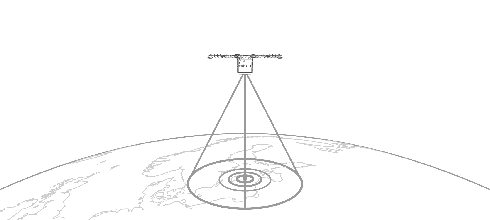
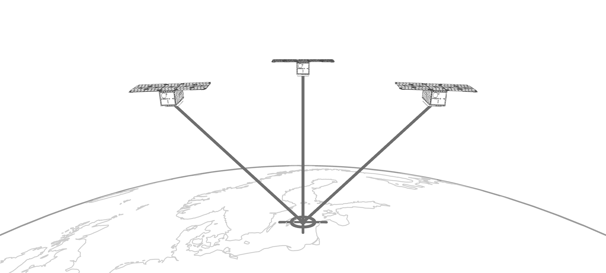
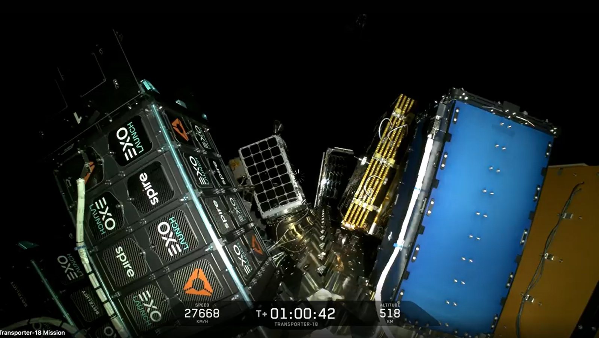
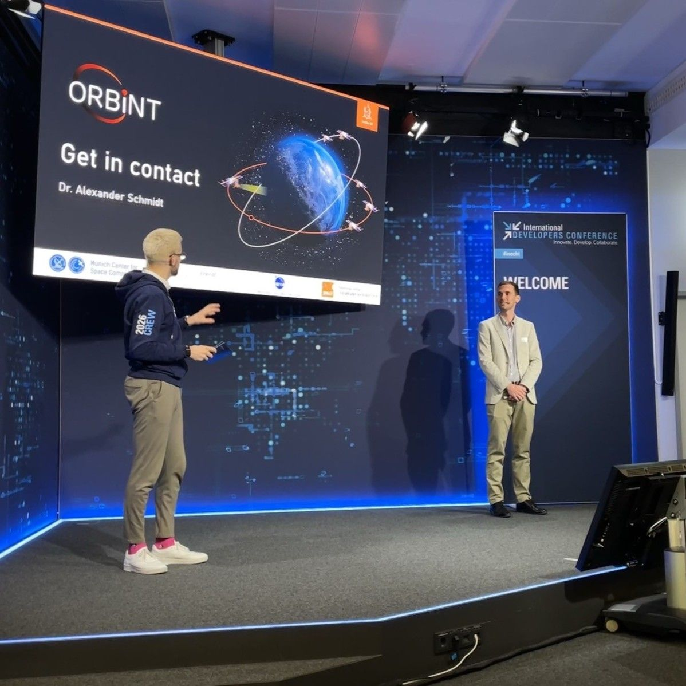
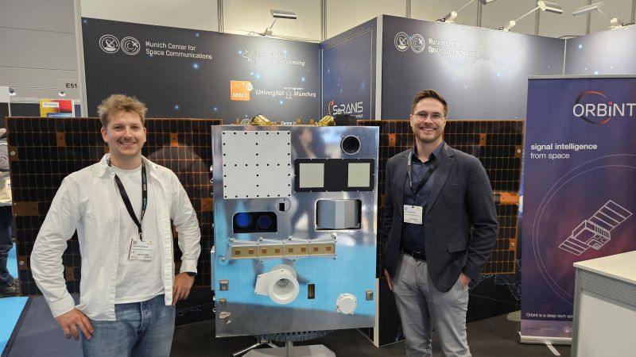
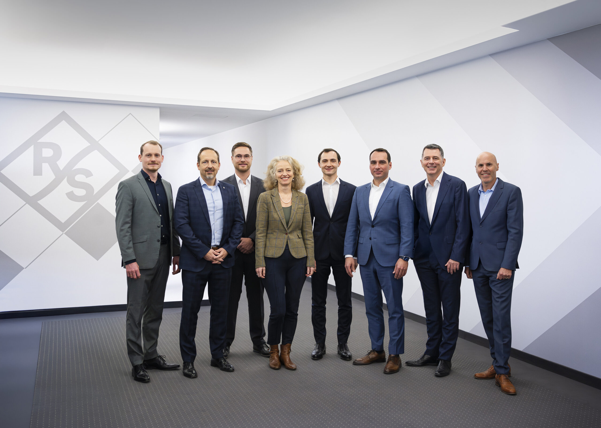
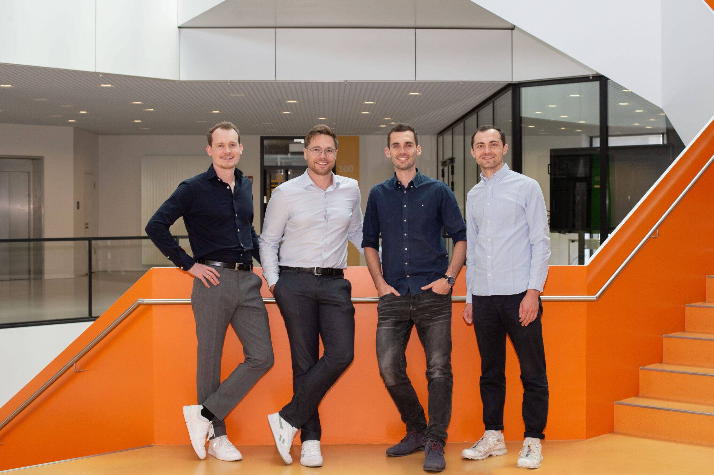

Full spectrum insight from orbit.
Satellites in formation that detect, identify and localize radio emitters anywhere on Earth. One sovereign European system, from orbit to the analyst, for armed forces, security agencies and civil authorities.
Founded by researchers from
Spun off from the mission
In partnership with
System
One system, from payload to actionable insight.
High-accuracy localization from satellites flying in formation. Hardware and software are built together, by one team.

One satellite: detect and identify
A single pass captures what is transmitting and fingerprints the emitter.

Formation: high-accuracy localization
Three satellites measure the same signal and pin the emitter down to its position.
-
Space-qualified receivers, built in-house.
-
Signals are processed on the satellite.
-
Tasking, downlink and fusion in European infrastructure.
-
Emitter maps, tracks and alerts.
Use Cases
Signals intelligence for operators who cannot afford gaps.
Orbint delivers the full stack, from space-qualified RF receivers to the analyst interface. No data leaves European infrastructure.
Governmental use case example
Force build-up quantification
Units on the move change how they transmit. Orbint registers those activity changes over days, cues further collection and quantifies the build-up, for armed forces, intelligence services and security agencies.
Civilian use case example
Dark vessel detection
A ship switches off its AIS transponder, but its radar and radio keep transmitting. Orbint localizes those emissions within hours and cues patrols, for coast guards, fisheries and port authorities.
Partners
Built with Europe's leading institutions.
We develop and validate our system together with partners from research, industry and defence.
Heritage
Built on Germany's largest university space mission.
-
Oct 2020
SeRANIS mission
Small-satellite mission of the SPACE research center at the University of the Bundeswehr Munich, funded by dtec.bw.
-
Mar 2025
Spin-off
Orbint is founded out of the SeRANIS mission to bring space-based SIGINT into operation.

-
Nov 2025
Rohde & Schwarz invests
Strategic partner for signals intelligence across all domains, now including space.
Careers
Help us build Europe's signals intelligence system.
A young, growing team of engineers and scientists, rooted in research and driven by new ideas. Deep tech, from the lab to orbit.
Or write to us directly at career@orbint.de.
News
Stay updated about Orbint's latest developments.
Our latest articles, press releases, and achievements.
-
Separation successful: ATHENE-1 is in orbit
ATHENE-1, the satellite of the SeRANIS mission that Orbint was spun off from, lifted off aboard Transporter-18 and separated successfully, carrying 15 experiments into orbit.

-
Airbus, Rohde & Schwarz, constellr, Orbint and HPS Sign MoU for Sovereign Space-Based ISR
Airbus Defence and Space has signed an MoU with Rohde & Schwarz, constellr, Orbint and HPS to develop a sovereign, end-to-end satellite-based Earth observation and ISR solution for Europe.

-
Orbint at Rohde & Schwarz International Developers Conference 2026
Orbint presented to Rohde & Schwarz's global R&D community at IDC 2026 in Munich, exchanging ideas with developers and engineers on next-generation, highly reliable space-based systems.

-
SeRANIS and Orbint at Space Tech Expo 2025
Leonhard Kessler and Daniel Weinzierl from University of the Bundeswehr Munich presented SeRANIS and Orbint at the Space Tech Expo Europe in Bremen.

-
Rohde & Schwarz Invests in Orbint GmbH for Space-Based Signals Intelligence
Technology group Rohde & Schwarz has invested in Orbint GmbH, joining forces to advance satellite-based signals intelligence and strengthen Germany's and Europe's technological sovereignty in space.

-
Orbint becomes 100th Member of BDI NewSpace Initiative
Orbint GmbH joins the BDI NewSpace Initiative as its 100th member, bringing space-based signals intelligence to Germany's leading industry network.

-
"Tag der Raumfahrt" in Berlin: Space Cafe Clip
Alexander Eckert (né Schmidt), co-founder of Orbint GmbH, sat down with SpaceWatch.Global TV to discuss the future of satellite-based signals intelligence and Orbint's mission.
Contact
Request access or learn more.
Whether you are evaluating Orbint for a procurement decision, interested in a research partnership, or want to join the team.
Headquarters
Orbint GmbH
Lilienthalstraße 9
85579 Neubiberg, Germany